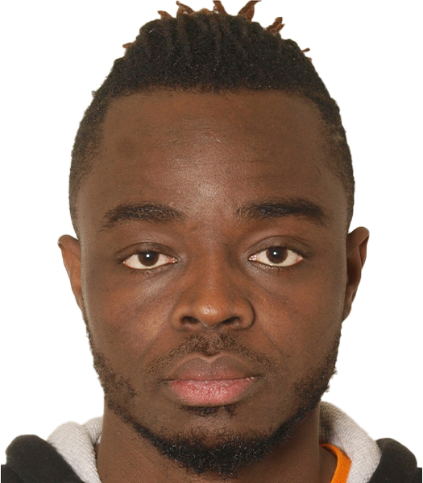

Mohamed Sesay Resume

Professional Summary
Dedicated and detail-oriented professional with a strong background in software development and project management. Proven ability to lead teams and deliver high-quality projects on time.
Education
- Primary School: St. Joseph's Primary School (1995 - 2001)
- Completed primary education with a focus on foundational skills in reading, writing, and arithmetic.
- Participated in extracurricular activities including sports and arts.
- Secondary School: St. Edwards Secondary School (2002 - 2007)
- Graduated with honors, specializing in science and mathematics.
- Active member of the debate club and science club.
- Tertiary Education: University of Sierra Leone (2008 - 2012)
- Bachelor's degree in Computer Science.
- Graduated with a GPA of 3.8/4.0.
- Completed a senior project on web application development.
Work Experience
- Software Developer at Tech Solutions
(2012 - 2016)
- Developed and maintained web applications using JavaScript, HTML, and CSS.
- Collaborated with cross-functional teams to define project requirements and deliverables.
- Project Manager at Innovatech
(2016 - Present)
- Led a team of developers to successfully deliver multiple software projects on time and within budget.
- Implemented agile methodologies to improve project workflows and team collaboration.
Skills
- Programming Languages: JavaScript, Python, Java
- Web Development: HTML, CSS, React, Node.js
- Project Management: Agile, Scrum, Kanban
- Database Management: MySQL, MongoDB
Awards & Certifications
- Certified Scrum Master (CSM) - 2018
- Employee of the Year at Innovatech - 2020
- Best Web Application Award at Tech Expo - 2015
My Hobby | Contact Me